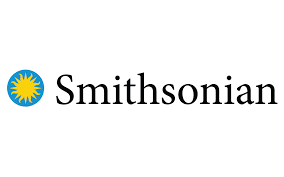

Things I Support
Below are some causes I support locally to help to enrich society and, if you're interested, click the
icon to see where you can contribute as well.

The Smithsonian Institution is the world’s largest museum, education, and research complex, with 19
museums and the National Zoo—shaping the future by preserving heritage, discovering new knowledge,
and sharing our resources with the world.
For the past 50 years, we’ve carried President Kennedy’s call to action forward as the nation’s
cultural center. In change and challenge, there has never been a greater need for the arts. As we
look to the next 50, we’re asking: what can WE do… together?
NPR is an independent, nonprofit media organization that was founded on a mission to create a more
informed public. Every day, NPR connects with millions of Americans on the air, online, and in
person to explore the news, ideas, and what it means to be human. Through its network of member
stations, NPR makes local stories national, national stories local, and global stories personal.